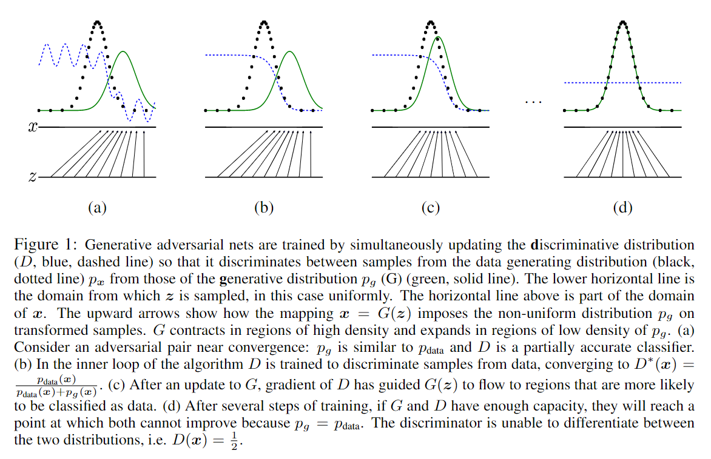
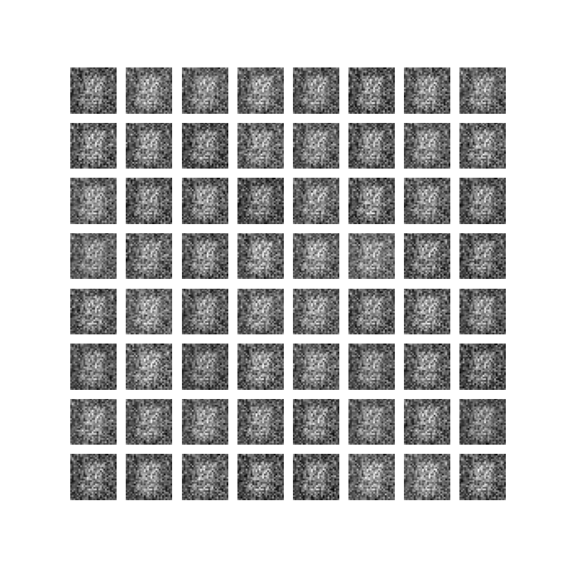
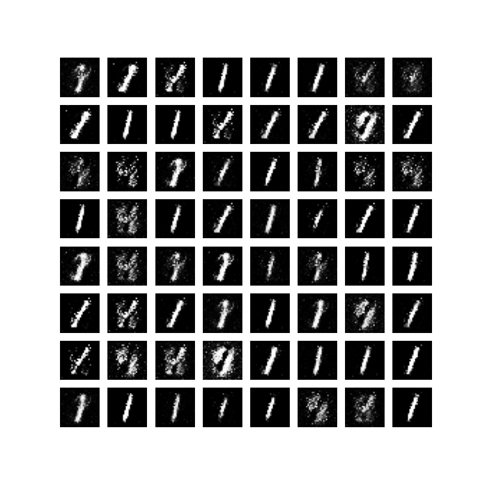

生成对抗网络
Generative Adversarial Networks
Goodfellow I , Pouget-Abadie J , Mirza M ,et al.Generative Adversarial Nets[J].MIT Press, 2014.DOI:10.3156/JSOFT.29.5_177_2.
We propose a new framework for estimating generative models via an adversarial process, in which we simultaneously train two models: a generative model G that captures the data distribution, and a discriminative model D that estimates the probability that a sample came from the training data rather than G. The training procedure for G is to maximize the probability of D making a mistake. This framework corresponds to a minimax two-player game. In the space of arbitrary functions G and D, a unique solution exists, with G recovering the training data distribution and D equal to ½ everywhere. In the case where G and D are defined by multilayer perceptrons, the entire system can be trained with backpropagation. There is no need for any Markov chains or unrolled approximate inference networks during either training or generation of samples. Experiments demonstrate the potential of the framework through qualitative and quantitative evaluation of the generated samples.
摘要：论文提出一个通过对抗过程估计生成模型的新框架。在对抗过程中，同时训练两个模型：一个捕获数据分布的生成器 G，和一个估计样本来自训练数据还是生成器 G 的判别器 D。生成器 G 的训练过程是最大化判别器 D 犯错的概率。这个框架相当于一个极大极小二人博弈游戏。在任意的 G 和 D 函数空间中，存在唯一解，使得生成器 G 能复刻训练集的数据分布，同时判别器 D 对于生成器 G 生成的任意样本作出的判断都是真假参半（真假概率各半）。如果生成器 G 和判别器 D 都定义为多层感知器，那么整个系统可以使用误差反向传播进行训练。在模型的训练过程以及样本的生成中，不需要使用马尔科夫链或者展开的近似推理网络。通过对生成的样本进行定性和定量评估，实验证明了该框架的潜力。
GAN 模型
GAN包含两个模型：
- 生成器（Generator, G）：将随机噪声映射到数据空间，目标是生成与真实数据分布 $p_{\text{data}}$ 一致的样本。
- 判别器（Discriminator, D）：区分输入样本来自真实数据还是生成器，输出为样本真实性的概率。
两者通过极小极大博弈进行训练：
为了学习生成器在数据 $x$ 上的分布 $p_g$，定义输入噪声变量 $p_z(z)$ 的先验，然后将数据空间的映射表示为 $G(z; \theta_g)$，其中 $G$ 是由具有参数 $\theta_g$ 的多层感知器表示的可微函数。
定义第二个多层感知器 $D(x; \theta_d)$，其输出一个标量。$D(x)$ 表示 $x$ 来自真实数据而不是 $p_g$ 的概率。
训练判别器 D，最大化正确分类训练样本和生成器 G 生成样本的概率；同时训练生成器 G，最小化 $\log(1−D(G(z)))$，即让生成样本 $G(z)$ 被判别器误判为真实样本（$D(G(z))→1$）。
综上所述，GAN 的训练过程可表示为：
$$ \min_G \max_D V(D, G) = \mathbb{E}_{x \sim p_{\text{data}}(x)} [\log D(x)] + \mathbb{E}_{z \sim p_z(z)} [\log(1 - D(G(z)))]\tag{1} $$当生成器 G 分布 $p_g = p_{data}$，判别器 D 的最优解为 $D^*(x) = \frac{1}{2}$ 时，目标函数达到最小值 $\log({\frac{1}{2}}) + \log(1-\frac{1}{2}) = -\log{4}$。
网络理论
算法步骤
小批量随机梯度下降，$k$ 为超参数。
for i = 1, iterations do
for k steps do
m 个噪声样本的小批量样本 {z(1),., z(m)}，来自噪声先验 pg(z)。
m 个真实样本的小批量样本 {x(1),., x(m)}，来自真实数据集。
通过公式 2 提升判别器随机梯度来更新判别器。
end for
m 个噪声样本的小批量样本 {z(1),., z(m)}，来自噪声先验 pg(z)。
通过公式 3 降低生成器随机梯度来更新生成器。
end for
训练过程的巧思：
在 $k$ 步优化判别器 D 和 $1$ 步优化生成器 G 之间交替进行：在 one step 的内部循环中优化判别器 D 在计算上是不可行的，并且容易在有限的数据集上导致过拟合。
最大化 $\log D(G(z))$ 代替最小化 $\log(1−D(G(z)))$ 训练生成器 G：在生成器 G 效果很差时，判别器 D可以以高置信度拒绝样本，这种情况下，$\log(1−D(G(z)))$ 不起作用。
原文中提供下图：

注：黑色散点线为真实数据的分布；绿色实线为生成器 $G$ 生成数据的分布；蓝色虚线为判别器 $D$ 的分布，区分黑色散点与绿色实线。最下面的直线为均匀采样 $z$ 的域；其上面的直线是 $x$ 域的一部分。向上的箭头表示 $x = G(z)$ 的映射关系。
- 图 (a)：对抗接近收敛，$p_g$ 接近 $p_{data}$，判别器部分分类正确（能否分辨出真实数据和生成数据）。
- 图 (b)：在算法的内部循环中，判别器 D 向着分类数据训练，收敛在 $D^*(x) = \frac {p_{data}(x)}{p_{data}(x) + p_g(x)}$。
- 图 (c)：更新生成器 $G$ 后，判别器 $D$ 的梯度引导 $G(z)$ 偏向更有可能被归类为真实数据的区域。
- 图 (d)：经过若干步训练后，如果 $G$ 和 $D$ 有足够的容量，它们会收敛到 $p_g = p_{data}$，此时 $D$ 无法区分出真实数据和生成数据，即 $D(x) = \frac {1}{2}$。
解释全局最优解 $p_g = p_{data}$
命题 1. 对于固定的生成器 $G$，最优判别器 $D$ 为：
$$ D^*_G(x) = \frac {p_{data}(x)}{p_{data}(x) + p_g(x)} $$证明： 给定任何生成器 $G$ 的判别器 $D$ 的训练标准是最大化 $V(G, D)$。
$$ V(G,D) = \int_x p_{data}(x) \log(D(x))dx + \int_z p_z(z) \log(1 - D(g(z)))dz\tag{4} $$通过变量替换 $G(z) = x \sim p_g(x)$，式(4)改写为：
$$ V(G,D) = \int_x \left[p_{data}(x) \log(D(x)) + p_g(x) \log(1 - D(x))\right] dx $$
- 生成器 $G$ 将噪声输入 $z \sim p_z(z)$ 映射为样本 $x=G(z)$，隐式定义了生成样本的分布 $p_g(x)$。当 $z$ 服从噪声先验 $p_z(z)$ 分布时，$x=G(z)$ 的分布即为 $p_g(x)$；若 $z \sim p_z(z)$，则 $x=G(z)\sim p_g(x)$。
- 对于变量替换定理，对于任意函数 $h(x)$，若 $x$ 是随机变量 $z$ 的映射 $x=G(z)$，则关于 $z$ 的期望可以转换为关于 $x$ 的期望：$\mathbb{E}_{z \sim p_z(z)}[h(G(z))] = \mathbb{E}_{x \sim p_g(x)}[h(x)]$。
对于每个样本 $x$，求 $D(x)$ 使得 $V(D,G)$ 最大化。这是一个单变量优化问题，最优解为：
$$ D^*_G(x) = \frac {p_{data}(x)}{p_{data}(x) + p_{g}(x)} $$将最优判别器代入到目标函数有：
$$ \begin{aligned} C(G) &= \max_D V(G,D)\\ &= \mathbb{E}_{x \sim p_{\text{data}}} \left[\log D^*_G(x) \right] + \mathbb{E}_{z \sim p_z} \left[\log(1 - D^*_G(G(z))) \right] \\ &= \mathbb{E}_{x \sim p_{\text{data}}} \left[\log D^*_G(x) \right] + \mathbb{E}_{x \sim p_g} \left[\log(1 - D^*_G(x)) \right]\\ &= \mathbb{E}_{x \sim p_{\text{data}}} \left[\log \frac {p_{data}(x)}{p_{data}(x) + p_{g}(x)} \right] + \mathbb{E}_{x \sim p_g} \left[\log \frac {p_{g}(x)}{p_{data}(x) + p_{g}(x)} \right] \end{aligned}\tag{5} $$定理 1. 当且仅当 $p_g = p_{data}$ 时，$C(G)$ 达到的全局最小值 $-\log 4$。
证明： 对于 $p_g = p_{data}$，有 $D^*_G(x)=\frac{1}{2}$。因此：
$$ C(G) = \mathbb{E}_{x\sim p_{data}} \frac {p_{data}(x)}{p_{data}(x) + p_{g}(x)} + \mathbb{E}_{x\sim p_{g}} \frac {p_{g}(x)}{p_{data}(x) + p_{g}(x)}= \log \frac {1}{2} + \log \frac {1}{2} = -\log 4 $$GAN 的优化目标是最小化生成模型分布 $p_g$ 和真实数据分布 $p_{data}$ 之间的差异，将目标函数中的对数概率表达为 KL 散度的形式。引入变形以关联 KL 散度：
$$ \begin{aligned} \log \frac {p_{data}(x)}{p_{data}(x) + p_{g}(x)} = \log \frac {p_{data}(x)}{\frac {p_{data}(x)+p_g(x)}{2}} - \log 2 \\ \log \frac {p_{g}(x)}{p_{data}(x) + p_{g}(x)} = \log \frac {p_{g}(x)}{\frac {p_{data}(x)+p_g(x)}{2}} - \log 2 \end{aligned} $$所以，
$$ \begin{aligned} C(G) &= -\log 4 + \mathbb{E}_{x\sim p_{data}} \left[\log \frac {p_{data}(x)}{\frac {p_{data}(x)+p_g(x)}{2}} \right] + \mathbb{E}_{x\sim p_{g}} \left[\log \frac {p_{g}(x)}{\frac {p_{data}(x)+p_g(x)}{2}} \right] \\ &= - \log 4 + \text{KL}\left(p_{data}||\frac{p_{data}+p_g}{2}\right) + \text{KL}\left(p_g||\frac{p_{data}+p_g}{2}\right) \\ &= - \log 4 + 2 \cdot \text{JSD}(p_{data} || p_g) \end{aligned} $$其中，KL 散度是衡量两个分布差异的常见方法，定义为：$\text{KL}(p||q) = \mathbb{E}_{x\sim p} \log \frac {p(x)}{q(x)}$。Jensen-Shannon 散度（JSD）是 KL 散度的一个对称版本，是衡量两个分布差异的对称性指标，定义为：$\text{JSD}(p||q) = \frac {1}{2} \text{KL}(p|| \frac {p + q}{2}) + \frac {1}{2} \text{KL}(q|| \frac {p + q}{2})$。
由于 JSD 非负，当且仅当 $p = q$ 时为零，因此：
$$ C(G) \geq -\log 4, 且等号成立当且仅当 p_g = p_{data} $$证毕。
解释算法收敛性
命题 2. 如果生成器 $G$ 和判别器 $D$ 都有足够的容量，并且算法的每一步都允许判别器在给定 $G$ 的情况下达到最优，并更新 $p_g$ 以改进标准 $\mathbb{E}_{x\sim p_{data}}[\log D^*_G(x)] + \mathbb{E}_{x\sim p_{g}}[\log (1 - D^*_G(x))]$，则 $p_g$ 收敛到 $p_{data}$。
证明： 考虑 $V(G, D) = U(p_g, D)$ 作为 $p_g$ 的函数。$U(p_g, D)$ 是凸函数，且全局最优解唯一。通过梯度下降更新 $p_g$，其参数更新方向始终朝向 JSD 减小的方向，从而保证收敛。
代码实验
实验代码如下，详细代码位于Github：
GAN - MNIST 实验代码
'''
Created on 2025.02.01
@Author: Fingsinz (fingsinz@foxmail.com)
@Reference:
1. https://arxiv.org/abs/1406.2661
'''
import time
import os
import torch
import numpy as np
import torch.nn as nn
import torch.optim as optim
from torch.utils.data import DataLoader
from torchvision import datasets, transforms
import matplotlib.pyplot as plt
# 配置参数
class Config():
data_folder: str = './data' # 数据集路径, 此处用 MNIST 做测试
batch_size: int = 128 # batch 大小
epochs: int = 10 # 训练轮数
lr: float = 0.0002 # 学习率
betas: tuple = (0.5, 0.999) # Adam 的超参数
k_steps: int = 5 # k 值
latent_dim: int = 100 # 隐变量维度
device: str = 'cuda' if torch.cuda.is_available() else 'cpu'
# 生成器
class Generator(nn.Module):
def __init__(self, latent_dim):
super().__init__()
self.model = nn.Sequential(
nn.Linear(latent_dim, 256),
nn.LeakyReLU(0.2),
nn.Linear(256, 512),
nn.LeakyReLU(0.2),
nn.Linear(512, 1024),
nn.LeakyReLU(0.2),
nn.Linear(1024, 28 * 28),
nn.Tanh()
)
def forward(self, x):
return self.model(x).view(-1, 1, 28, 28)
# 判别器
class Discriminator(nn.Module):
def __init__(self):
super().__init__()
self.model = nn.Sequential(
nn.Flatten(),
nn.Linear(28 * 28, 1024),
nn.LeakyReLU(0.2, inplace=True),
nn.Linear(1024, 512),
nn.LeakyReLU(0.2, inplace=True),
nn.Linear(512, 256),
nn.LeakyReLU(0.2, inplace=True),
nn.Linear(256, 1),
nn.Sigmoid()
)
def forward(self, x):
return self.model(x)
# GAN 模型
class GAN():
def __init__(self, config):
self.config = config
self.generator = Generator(config.latent_dim).to(config.device)
self.discriminator = Discriminator().to(config.device)
self.criterion = nn.BCELoss()
self.g_optimizer = optim.Adam(self.generator.parameters(), lr=config.lr, betas=config.betas)
self.d_optimizer = optim.Adam(self.discriminator.parameters(), lr=config.lr, betas=config.betas)
self.real_label = 1
self.fake_label = 0
def get_data(self):
transform = transforms.Compose([
transforms.ToTensor(),
transforms.Normalize((0.5,), (0.5,))
])
train_dataset = datasets.MNIST(root=self.config.data_folder, train=True, download=True, transform=transform)
train_loader = DataLoader(train_dataset, batch_size=self.config.batch_size, shuffle=True)
return train_loader
def train(self):
train_loader = self.get_data()
epochs = self.config.epochs
g_loss = 0
d_real_loss = 0
d_fake_loss = 0
for epoch in range(epochs):
for i, (images, _) in enumerate(train_loader):
batch_size = images.size(0)
images = images.to(self.config.device)
# ---判别器训练-----------------------------
if (i + 1) % self.config.k_steps != 0:
self.d_optimizer.zero_grad()
# 训练真实数据
labels = torch.full((batch_size,), self.real_label, device=self.config.device).float()
output = self.discriminator(images)
loss_real = self.criterion(output.view(-1), labels)
loss_real.backward()
# 训练假数据
z = torch.randn(batch_size, self.config.latent_dim, device=self.config.device)
fake_images = self.generator(z)
labels.fill_(self.fake_label).float()
output = self.discriminator(fake_images.detach())
loss_fake = self.criterion(output.view(-1), labels)
loss_fake.backward()
self.d_optimizer.step()
d_real_loss = loss_real.item()
d_fake_loss = loss_fake.item()
# ---判别器训练-----------------------------
# ---生成器训练-----------------------------
else:
self.g_optimizer.zero_grad()
labels.fill_(self.real_label).float()
output = self.discriminator(fake_images)
loss_g = self.criterion(output.view(-1), labels)
loss_g.backward()
self.g_optimizer.step()
g_loss = loss_g.item()
# ---生成器训练-----------------------------
if i % 100 == 0:
print(f"[{time.strftime('%Y-%m-%d %H:%M:%S', time.localtime())}] " +
f"Epoch [{epoch}/{epochs}], Step [{i}/{len(train_loader)}], "
f"D Loss: {d_real_loss:.4f} + {d_fake_loss:.4f}, G Loss: {g_loss:.4f}")
self.save_generated_images(epoch + 1)
def save_generated_images(self, epoch):
"""
保存训练效果图片
参数:
- epoch (int): 当前轮数
"""
z = torch.randn(64, self.config.latent_dim, device=self.config.device)
fake_images = self.generator(z)
fake_images = fake_images.cpu().detach().numpy()
fake_images = np.transpose(fake_images, (0, 2, 3, 1))
fig, axes = plt.subplots(8, 8, figsize=(8, 8))
for i in range(8):
for j in range(8):
axes[i, j].imshow(fake_images[i * 8 + j, :, :, 0], cmap='gray')
axes[i, j].axis('off')
if not os.path.exists('gan_generated_images'):
os.makedirs('gan_generated_images')
plt.savefig(f'./gan_generated_images/epoch_{epoch}.png')
plt.close()
if __name__ == '__main__':
config = Config()
gan = GAN(config)
gan.train()
GAN 对于 MNIST 数据集效果可如下所示：
| 第一轮生成的图片 | 第十轮生成的图片 |
|---|---|
|  |  |
论文优缺点及未来工作
优点（DeepSeek总结）：
生成样本质量高：GAN生成的图像、音频等数据具有极高的逼真度，尤其在图像生成任务中表现出色（如人脸、艺术作品生成）。生成器通过对抗训练不断优化，以欺骗判别器，最终生成的样本细节丰富、接近真实数据分布。
无需显式建模数据分布：GAN通过对抗过程直接学习数据分布，无需预先定义概率密度函数（如VAE需要假设潜在变量的分布），适用于复杂高维数据（如自然图像）。
生成多样性：在理想情况下，GAN能够覆盖真实数据的所有模式，生成多样化样本。相比之下，某些模型（如朴素自回归模型）可能因逐像素生成导致模式单一化。
无监督学习能力：GAN仅需未标注数据即可训练，适合缺乏标签的场景（如艺术创作、数据增强）。
灵活的应用扩展：GAN框架可轻松扩展为条件生成（cGAN）、图像翻译（CycleGAN）、超分辨率（SRGAN）等任务，适应多种生成需求。
缺点（DeepSeek总结）：
训练不稳定
- 模式坍缩（Mode Collapse）：生成器可能仅生成少数几种样本，忽略数据多样性。
- 梯度问题：若判别器过强，生成器梯度消失；若生成器过强，判别器无法提供有效反馈。
评估困难
- 缺乏显式似然函数，难以直接计算生成样本的概率。
- 常用指标（如Inception Score、FID）依赖预训练模型，可能无法全面反映生成质量。
超参数敏感：学习率、网络结构、正则化方法等对训练结果影响显著，需反复调参。
理论分析复杂
- 收敛性难以保证，实际训练可能陷入局部最优。
- 均衡状态（纳什均衡）在有限模型容量下难以达到。
生成不可控性
- 生成过程缺乏显式约束，可能产生不合理样本（如人脸扭曲）。
- 对离散数据（如文本）生成效果较差，因梯度无法通过离散变量传递。
计算资源消耗大：训练高质量GAN需要大量数据和计算资源（如GPU），耗时较长。
未来工作：
- 更好地理解这种框架，例如在高维空间中的表现；
- 探索其他算法和数据结构，例如使用卷积神经网络作为掩码器；
- 探索其他训练方法，例如使用梯度反向传递训练模型；
- 探索其他损失函数，例如使用KL损失函数；
- 探索其他训练方法，例如使用GAN训练模型。